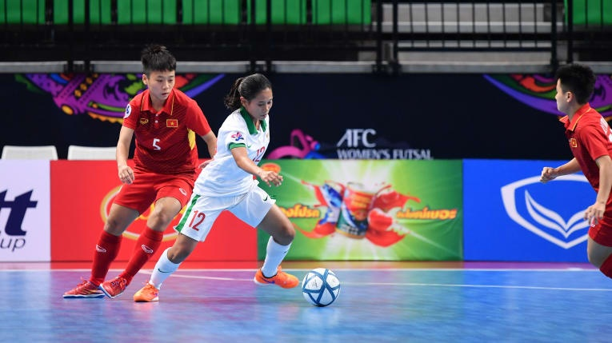

Left
Materi Futsal
Middle
Futsal adalah permainan bola yang dimainkan oleh dua tim, yang masing-masing beranggotakan lima orang. Tujuannya adalah memasukkan bola ke gawang lawan, dengan memanipulasi bola dengan kaki. Selain lima pemain utama, setiap regu juga diizinkan memiliki pemain cadangan. Tidak seperti permainan sepak bola dalam ruangan lainnya, lapangan futsal dibatasi garis, bukan net atau papan.
Futsal turut juga dikenali dengan berbagai nama lain. Istilah "futsal" adalah istilah internasionalnya, berasal dari kata Spanyol atau Portugis, futbol (sepak bola) dan sala (dalam ruangan).

Right
Futsal dipopulerkan di Montevideo, Uruguay pada tahun 1930, oleh Juan Carlos Ceriani. Keunikan futsal mendapat perhatian di seluruh Amerika Selatan, terutamanya di Brasil.
Artikel Futsal Lain